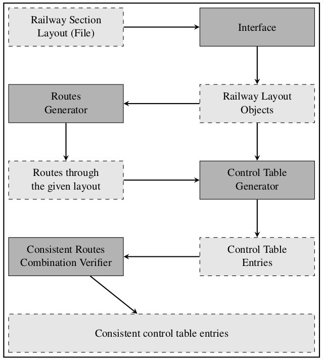

Railway Section Layout - Sample
Figure 1: Sample Railway Section Layout
An example railway section layout has been given above. In this example, there are two track lines with 17 track segments, 4 points, 14 signals and 9 labels. To give this layout as input, it must be specified using a formal model such as graph. All the labels and ID are specified as attibutes of vertices and edges in the graph.
This layout consists of 5 different types of signals namely, Calling on home, Home, Shunt, Starter and Advanced starter. The 14 signals can be classified into these types. 1B and 32B are calling on home. 1A and 32A are home. 9 and 17 are shunt. 3, 2, 6, 30, 31 and 27 are starter. 8 and 25 are advanced starter. The starter signals can be further classified into main line starter(2 and 31) and loop line starter(3, 6, 30 and 27). A train can move either towards up or towards down through a railway section. Hence it is important to provide signalling for both the directions.
The points 50, 52, 63 and 65 allow a train to move from main line to loop line or vice versa. A main line is the sequence of track segments that can allow a train to move from one railway section to another. A loop line is a sequence of track segments that branches from main line. When calling on home and shunt signal are given to the train driver, he need not stop the train at the specified track segment. The difference between calling on home and shunt signal is that the train moving on calling on home signal will have higher speed than shunt signal. The train following shunt signal will be moving at a very low speed of 10-20 kmph. Also, for train following shunt signal, there will be a shunter person to monitor the train movement which is not in calling on home.
Graph Representation of Sample Layout
Figure 2: Graph Representation of Sample Layout
The sample railway layout is represented as a bidirectional graph to make it easier for a program to parse and identify the various aspects of a railway section. The track segments are represented as vertices using circular nodes. An edge connects two vertices if a train can move from one track segment to another. Labels for track segments are represented using elliptical nodes. Signals at a track segment are represented using rectangular nodes. Point IDs for specific track segments are represented using triangular nodes. The graph for above layout is given
Architecture of Project
The graph as shown above is represented as text in a file and given as input to the program. The program parses the input file and recognizes the graph as adjacency list. Other information such as signals, point IDs and track labels are also parsed and recognized. The input file consists of 6 sections, each separated by the keyword 'END'. The system that has been developed by us is based on the architecture given below.
Figure 3: Project Architecture
The program which generates the control table for a given layout is built using Ruby v1.9.3 programming language in Ubuntu 14.04 LTS OS. The Ruby program generates NuSMV program which is used to do model checking and the final output is produced by using LaTeX software.
The reason to use Ruby programming language is to make exploit Hash for searching the required objects based on its ID and to run Linux Terminal commands from the program like executing NuSMV program or compiling the LaTeX code. NuSMV was chosen due to its simple syntax to represent a model. LaTeX was chosen to produce final output, as tabular format of output is the required one and LaTeX gave the best optimal solution to generate output as a PDF file.
The code developed by us, can be downloaded from here. Install Ruby (this may be useful to install Ruby), LaTeX and NuSMV before running the code.